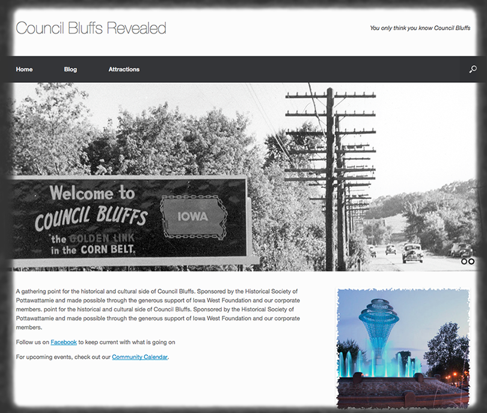
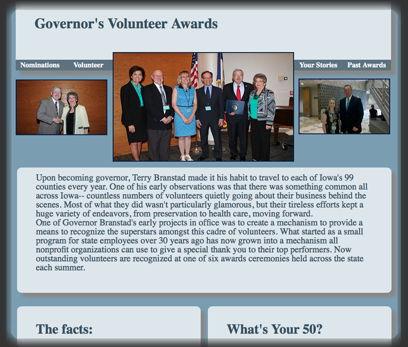
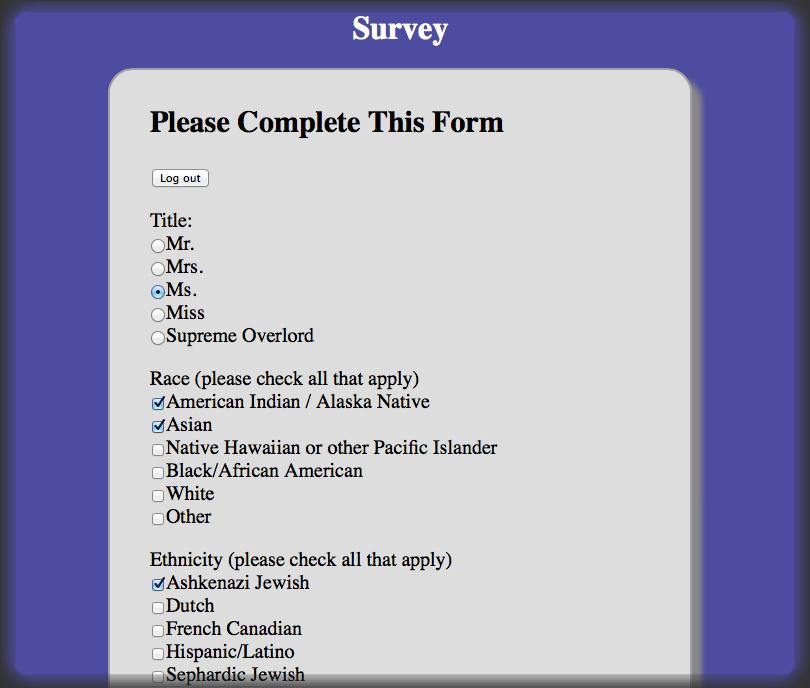

 Contract job for the Pottawattamie county Historical Society WordPress content management system chosen to enable frequent blog style updates from Historical Society employees Heavily customized theme used to best fit client's needs Modified CSS and installed 3rd party plugins Worked closely with clients to ensure optimal results Provided continual support and help WordPress functionality
 Volunteer Job for the Iowa Commission on Volunteer Service 100% custom designed and coded website and layout Used a variety of technologies including HTML, CSS, JavaScript, and 3rd party PHP plugins integrated into the site Remained in constant communication with client in order to create and adjust the site to fit their needs
 Volunteer Job for the Creighton Hereditary Cancer Health Center Created dynamic web survey with individual accounts capable of repopulating the form with your answers Enabled support for hidden sub questions based on selected input Designed all front end HTML, CSS, and JavaScript Worked as a group with backend developers to attach my front end to their database Backend of site developed using PHP and a MySQL database Helped backend developers and acquired familiarity with phpMyAdmin